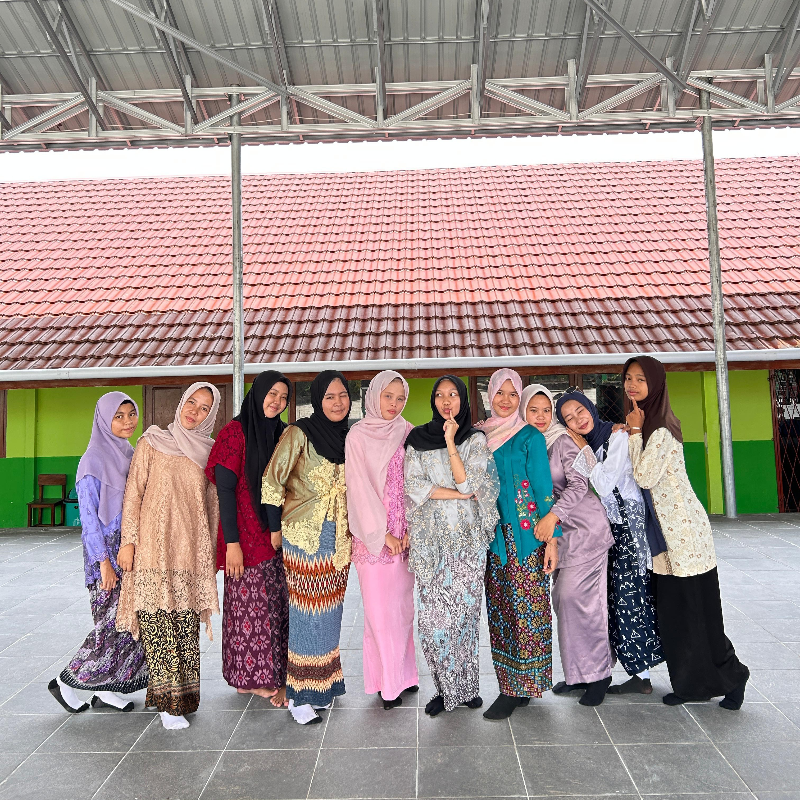
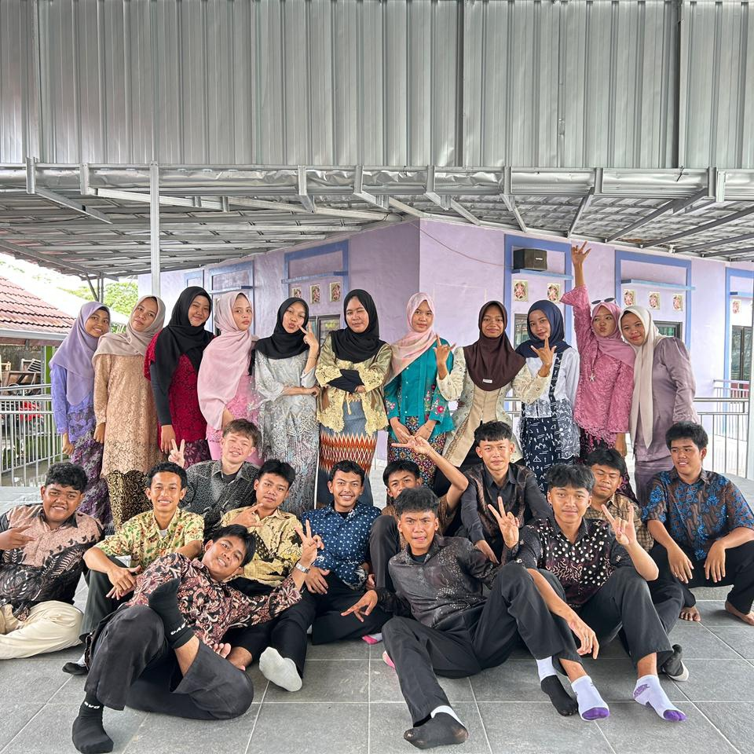

1. Pose Santai di Aula Sekolah
Momen kebersamaan dan keceriaan para siswa laki-laki saat bersantai duduk lesehan di aula sekolah. Mengenakan pakaian batik dengan berbagai gaya dan pose unik yang mencerminkan keakraban serta kekompakan persahabatan mereka.

2. Foto Bersama Seluruh Anggota Kelas
Momen kebersamaan seluruh siswa-siswi kelas XII IPS 1 dalam balutan pakaian batik dan kebaya yang anggun serta rapi. Semua berkumpul bersama dengan senyuman dan pose ceria untuk mengabadikan kenangan istimewa hari itu.

3. Foto Unik
Potret ekspresif enam siswa dengan pengambilan gambar dari sudut bawah (low angle) yang keren. Memperlihatkan gaya santai, serta pose peace dan swag yang penuh energi dan percaya diri.

4. Pesona Anggun Busana Nusantara Siswi
Potret kebersamaan para siswi kelas XII IPS-1 yang tampil anggun dan kompak berjejer rapi. Masing-masing mengenakan balutan busana tradisional bernuansa batik dan kebaya berpadu hijab yang serasi, menciptakan suasana kebersamaan yang hangat dan penuh warna.

5. Formasi Lengkap Kebersamaan Kelas
Dokumentasi formasi lengkap seluruh siswa dan siswi kelas XII IPS-1 yang berpose bersama dalam balutan ragam busana batik. Terlihat barisan siswi berdiri di belakang dengan senyuman ramah sementara para siswa duduk di depan dengan berbagai gaya kasual dan ekspresif, menunjukkan eratnya keakraban di dalam kelas.